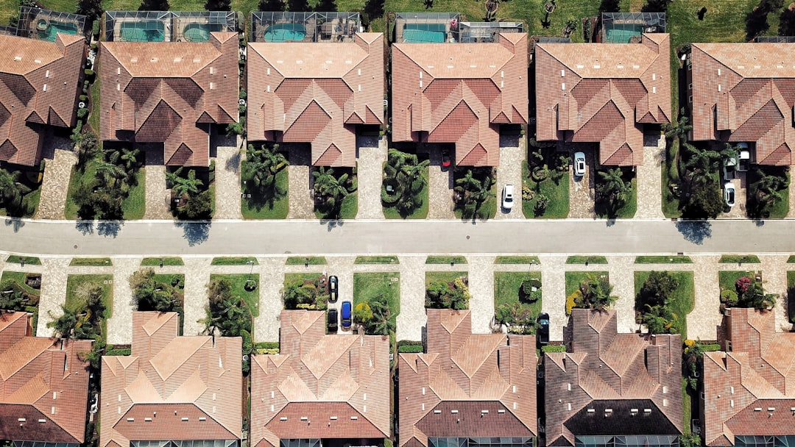

For a Fort Myers roof, start with inspection, written scope and licence verification. The published Fort Myers Roofing copy gives asphalt shingle replacement as an indicative local guide of about $4.50 to $8.00 per square foot, with tile and metal higher, but says a firm price should come only after the contractor has walked the roof. It also notes no pressure and no obligation before an enquiry moves forward.
For homeowners comparing roofing contractors fort myers options, the useful question is not who sounds busiest, but who can inspect the roof, explain the code and material choices, and price the actual scope.
Roofing Contractors Fort Myers Explained
Fort Myers Roofing frames the first decision around a real inspection, because a leak, storm mark or ageing roof can lead to different scopes. Its published copy separates targeted repair from full tear-off and re-roofing, so a homeowner should ask what was actually found before accepting a replacement recommendation.
A useful inspection discussion identifies the roof covering, visible damage, flashing condition, ventilation concerns and whether roof decking may need attention once work begins. Some items cannot be priced firmly from photos or a phone description. That is why any early number should stay a guide until the contractor has walked the roof and put the estimate in writing.
- Ask whether the issue is localised to missing shingles, cracked tiles, worn flashing or a leak path.
- Ask what could change the quoted scope once the roof covering is opened.
- Ask whether the job is a repair, a re-roof or a full replacement from decking and underlayment up.
Who this applies to
This guide applies to Fort Myers and Lee County homeowners dealing with a fresh leak, visible storm damage or an ageing roof that needs a plan. It also applies where the roof type changes the trade-off, such as asphalt shingle, barrel tile, standing-seam metal, a metal panel system or a flat membrane over a lanai or low-slope section.
The local setting is relevant because the business copy names relentless sun, summer downpours, salt air near the coast and tropical systems as wear factors in Southwest Florida. Those conditions do not prove that replacement is required. They do make documentation, material choice and code-aware installation important when comparing roofing contractors in Fort Myers.
For storm damage and leak control, the published service description includes temporary tarping and a documented assessment before permanent repair and any homeowner insurance claim. For planned work, the better sequence is slower: identify the roof system, separate urgent leak control from lasting repair, then compare written scopes.
Licence, code and approval questions
Homeowners are told they can check any licence at MyFloridaLicense.com before work begins. Treat that as an action step. Record the business name and licence details supplied by the contractor, then verify them before paying a deposit or scheduling work.
Lee County roofing work is described as needing to meet Florida Building Code high-wind requirements. The practical question is how that requirement appears in the quote. Ask what product is being installed, what underlayment is included, how flashing is handled and whether the written scope identifies the roof areas included or excluded.
For permit and inspection process questions, ask who is responsible for applications, site inspections and close-out documents. The property address should drive that answer, especially where Fort Myers and Lee County responsibilities may differ by location.
Material choices should follow the roof shape
Asphalt shingle is described as the most common Fort Myers roof type, with attention to ventilation and heat and storm exposure. That does not make it the only sensible option. Tile, metal and flat membrane systems solve different problems, and roof pitch, structure, existing covering and budget can change the answer.
Concrete and clay tile are linked with barrel-tile roofs common on stucco and Mediterranean-style homes around Fort Myers. Standing-seam and metal panel roofing are described for homeowners wanting longer service life and strong wind performance under the Florida Building Code. TPO, EPDM and modified bitumen are named for additions, lanais and low-slope areas where a membrane system is the right fit.
If the roof has mixed sections, ask for the quote to separate each system. A shingle main roof and a flat lanai membrane should not be reduced to one vague line item. Separate line items make it easier to compare scope, materials and exclusions.
Cost signals and written scope
The only price figure supplied in the Fort Myers Roofing copy is an indicative local guide for asphalt shingle replacement, commonly around $4.50 to $8.00 per square foot, with tile and metal higher. That figure is not a quote. Roof size, pitch, material, decking and flashing can all affect the final number.
A useful written estimate should state the roof areas included, material type, tear-off assumptions, decking or flashing allowances, underlayment, ventilation work, clean-up and payment terms. If storm damage is involved, ask how photos and notes will be documented for an insurance discussion. If the problem is an active leak, separate immediate leak control from permanent repair.
For smaller jobs, the related guide to roof repair decisions in Fort Myers is a useful companion when the question is whether a targeted fix is enough.
- Describe the symptom. Start with the leak, storm damage, missing material or age concern, and include the roof type if known.
- Request an inspection. Ask the contractor to distinguish repairable damage from conditions that justify replacement.
- Verify the licence. Use MyFloridaLicense.com to check the contractor details before work begins.
- Compare written scope. Review material, underlayment, flashing, decking assumptions, permits and payment terms before approving the job.
| Decision | Repair may fit | Replacement may fit |
|---|---|---|
| Damage pattern | Localised leak, missing shingles, cracked tiles or worn flashing | Wider ageing, repeated leaks or roof covering at end of life |
| Scope basis | Targeted inspection of the damaged area | Full tear-off and re-roof from decking and underlayment up |
| Pricing | Written repair scope after inspection | Written estimate after roof walk, with material and decking assumptions |
| Documentation | Photos and notes for leak path or storm marks | Code-aware scope, materials and inspection process confirmed |
Common questions
How much should a Fort Myers homeowner budget for a new shingle roof? Fort Myers Roofing gives a market guide of about $4.50 to $8.00 per square foot for asphalt shingle replacement, with tile and metal higher. It also says roof size, pitch, material, decking and flashing affect the final price.
When is a repair better than replacement? A repair may suit a targeted issue such as missing shingles, cracked tiles, worn flashing or a localised leak. Replacement becomes the discussion when inspection points to wider ageing or damage that cannot be handled properly as a smaller repair.
What should be checked before hiring a roofer? Check the contractor licence at MyFloridaLicense.com, ask how the work will meet Florida Building Code high-wind requirements for Lee County, and require scope, price and terms in writing before work starts.
Does storm damage change the process? Yes. The published storm service description includes temporary tarping and leak control after storms, followed by a documented assessment for permanent repair and any homeowner insurance claim.
This guide covers Fort Myers roof inspection, repair, replacement, material and written quote decisions using the supplied Fort Myers Roofing copy.